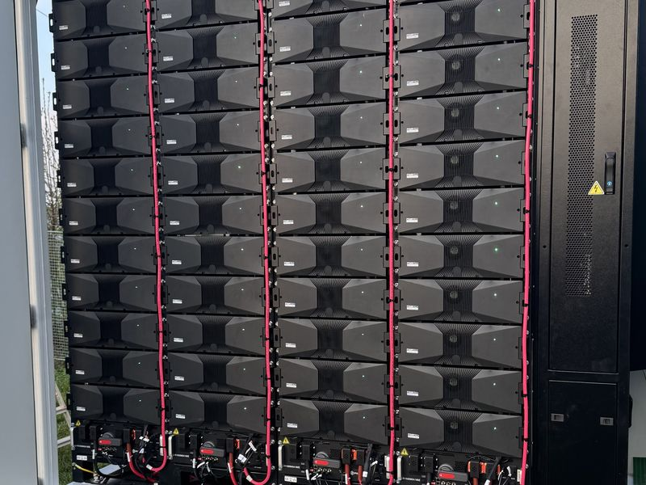
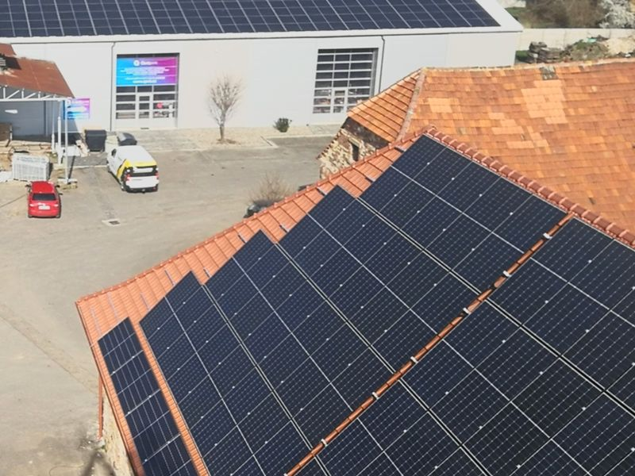
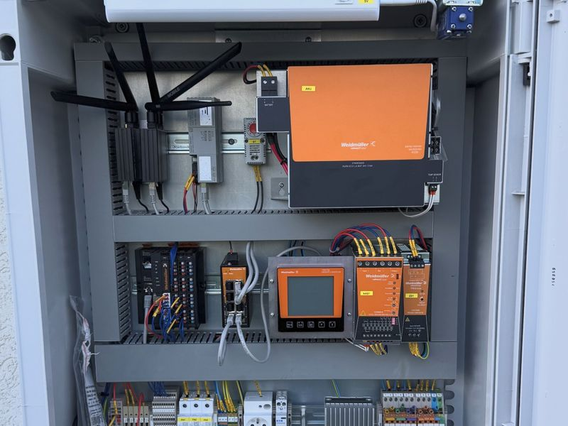
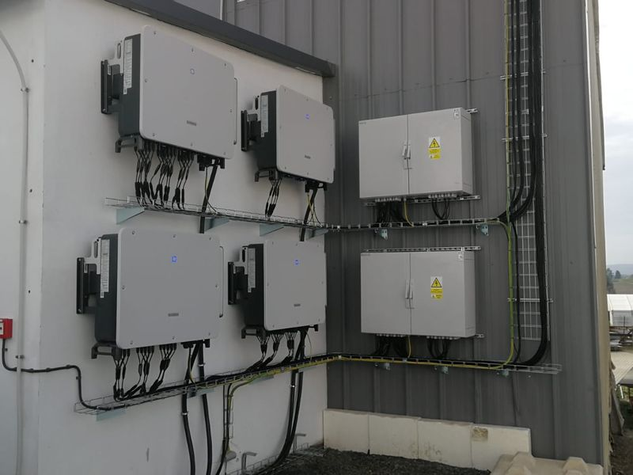
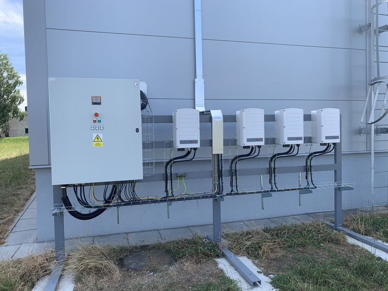
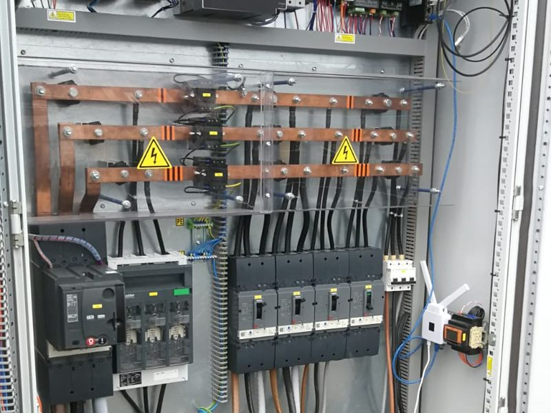
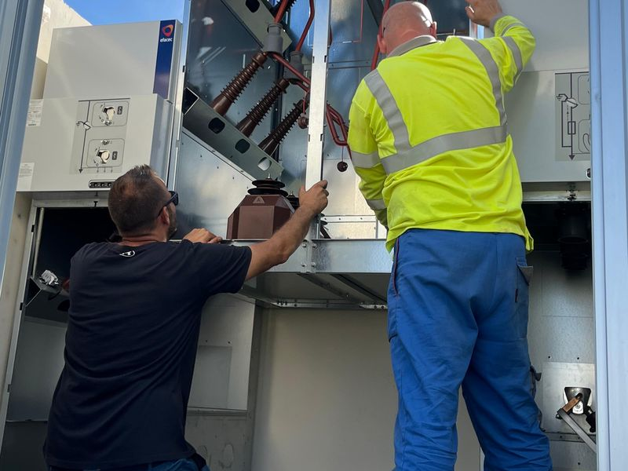
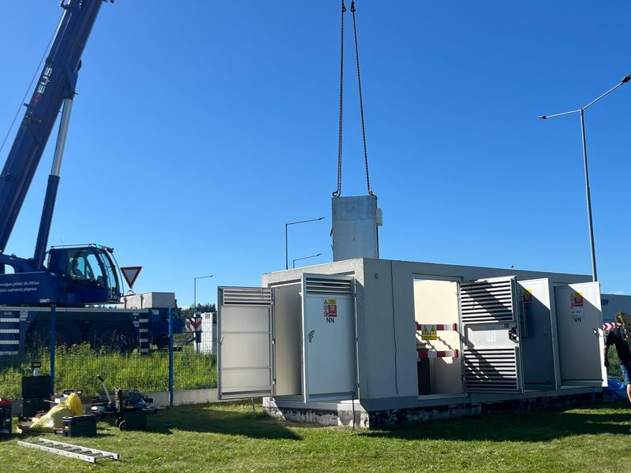

Fotovoltaika, kategorie D
Výkon: 36 MWp panelů, do sítě přibližně 30 MW, připojení na 110 kV
Distributor: EG.D
Předmět: simulace souladu, model výrobny, dokumentace
Stav: zpracováno
Co máme za sebou
Výběr našich úspěšně realizovaných projektů.
Většina investorů si nepřeje být jmenována, proto projekty uvádíme bez názvů – s tím, co jsme na nich dělali. Fotku zvětšíte kliknutím.
Fotky z projektů








Simulační zkoušky
Výkon: 36 MWp panelů, do sítě přibližně 30 MW, připojení na 110 kV
Distributor: EG.D
Předmět: simulace souladu, model výrobny, dokumentace
Stav: zpracováno
Výkon: 698 kWp (Pn 550 kW)
Distributor: ČEZ Distribuce
Předmět: zkoušky na místě, protokoly, Dokument výrobního modulu
Výkon: 60 kWp + bateriové úložiště
Distributor: EG.D
Předmět: etapizace fotovoltaiky a doplnění akumulace
Projekty ověření souladu podrobněji popisujeme na webu simulacni-zkousky.cz.
Reference na simulacni-zkousky.czNa vyžádání
Řekněte si o ni – po dohodě s investorem ji rádi doložíme podrobněji.
Poptávka
Máte zájem o spolupráci nebo potřebujete konzultaci? Napište nám, co řešíte – ozveme se do dvou pracovních dnů.
Čím více toho víme předem, tím přesněji odpovíme. Hodí se místo realizace, výkon elektrárny nebo úložiště, distributor a termín, se kterým počítáte.
Přejít na poptávkový formulář